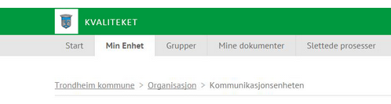
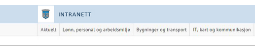

Her er to versjoner av logoen (eksempel, ikke originalfil), en med og en uten kommunenavn. I originalfilen benyttes Calibri (17.5px, uppercase, letterspacing 0.7px).Dersom det er mulig å skrive Trondheim kommune med tekst i banneret, i stedet for å bruke bilde med tekst, så kan man bruke følgende typelike formatering på kommunenavnet Trondheim kommune. { font-family: Open Sans; font-size: 15px; text-transform: uppercase; letter-spacing: 0.7px; }

